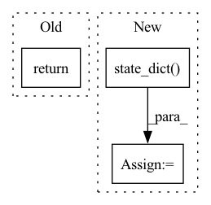

Pattern ID :32907
Before Change
// pyre-ignore [16]
destination._metadata = OrderedDict()
return self._state_dict(self.module, destination, prefix, keep_vars)
def _state_dict(
self,After Change
prefix: str = "",
keep_vars: bool = False,
) -> Dict[str, Any]:
state_dict = get_module(self).state_dict(prefix=prefix, keep_vars=keep_vars)
torch.nn.modules.utils.consume_prefix_in_state_dict_if_present(
state_dict, prefix + _DDP_STATE_DICT_PREFIX
)
add_prefix_to_state_dict(state_dict, prefix)In pattern: SUPERPATTERN
Frequency: 6
Non-data size: 3
Instances Fragment ID: 95426117
Project Name: facebookresearch/torchrec
Commit Name: 0e548277aeade5732ab4d45754fe2a583a887092
Time: 2022-04-19
Author: joshuadeng@fb.com
File Name: torchrec/distributed/model_parallel.py
M Class Name: DistributedModelParallel
N Class Name: DistributedModelParallel
M Method Name: state_dict(0)
N Method Name: state_dict(4)
M Parent Class: FusedOptimizerModule,nn.Module
N Parent Class: FusedOptimizerModule,nn.Module
M File Name: torchrec/distributed/model_parallel.py
N File Name: torchrec/distributed/model_parallel.py
M Start Line: 396
M End Line: 406
N Start Line: 420
N End Line: 425
Before Change
def compare_lr_scheduler_states(saved_model, loaded_model):
if saved_model.lr_scheduler is None:
assert loaded_model.lr_scheduler is None
return
saved = saved_model.lr_scheduler.state_dict()
loaded = loaded_model.lr_scheduler.state_dict()
assert sorted(saved.keys()) == sorted(loaded.keys())After Change
assert hasattr(loaded_scheduler, "state_dict")
saved_sd = saved_scheduler.state_dict()
loaded_sd = loaded_scheduler.state_dict()
print(f"saved_sd = {saved_sd}")
print(f"loaded_sd = {loaded_sd}")
Fragment ID: 95426118
Project Name: microsoft/deepspeed
Commit Name: f2ac7eafd54c49acb8981650637dedd939e96c14
Time: 2020-05-19
Author: jerasley@microsoft.com
File Name: tests/unit/test_checkpointing.py
M Class Name: AnonimousClass
N Class Name: AnonimousClass
M Method Name: compare_lr_scheduler_states(2)
N Method Name: compare_lr_scheduler_states(2)
M Parent Class:
N Parent Class:
M File Name: tests/unit/test_checkpointing.py
N File Name: tests/unit/test_checkpointing.py
M Start Line: 26
M End Line: 39
N Start Line: 66
N End Line: 87
Before Change
tokenizer: Optional[PreTrainedTokenizerBase] = None) -> None:
if only_rank0 and dist.get_rank() != 0:
return None
unwrapped_model = self._unwrap_model(model)
// TODO : better way to get torch model from gemini model
// to get torch model from gemini modelAfter Change
if self.stage == 3:
assert isinstance(base_model, ZeroDDP)
// for stage 3, state_dict() method should be called on every rank
state_dict = base_model.state_dict(only_rank_0=only_rank0)
else:
// only_rank0 is false or rank == 0
state_dict = base_model.state_dict()
if only_rank0 and dist.get_rank() != 0: Fragment ID: 95426120
Project Name: hpcaitech/colossalai
Commit Name: 842768a1749bf3d9961a48d2bf96ca5abef7d2da
Time: 2023-04-27
Author: lhx0217@gmail.com
File Name: applications/Chat/coati/trainer/strategies/colossalai.py
M Class Name: ColossalAIStrategy
N Class Name: ColossalAIStrategy
M Method Name: save_model(4)
N Method Name: save_model(5)
M Parent Class: DDPStrategy
N Parent Class: DDPStrategy
M File Name: applications/Chat/coati/trainer/strategies/colossalai.py
N File Name: applications/Chat/coati/trainer/strategies/colossalai.py
M Start Line: 168
M End Line: 196
N Start Line: 154
N End Line: 166
Before Change
"entropy": entropy[0].cpu()}
self.vis(dict_tensors, fp=f"{self.dir_checkpoints}/{self.nth_query}_query/{epoch}_val.png")
return
def _select_queries(self):
print(f"\n({self.experim_name}) selecting queries...")
self.model.eval()After Change
if self.running_miou.avg > self.best_miou:
state_dict = dict()
state_dict_model = model.state_dict()
state_dict.update({"model": state_dict_model})
if not self.use_softmax:
// state_dict_prototypes = prototypes.state_dict()
state_dict.update({"prototypes": prototypes.cpu()}) Fragment ID: 95426121
Project Name: noelshin/pixelpick
Commit Name: e6be6de4c779434209cdf90f63775a1b0e510975
Time: 2021-01-14
Author: gyungin@robots.ox.ac.uk
File Name: segmentation/model.py
M Class Name: Model
N Class Name: Model
M Method Name: _val(4)
N Method Name: _val(4)
M Parent Class:
N Parent Class:
M File Name: segmentation/model.py
N File Name: segmentation/model.py
M Start Line: 316
M End Line: 331
N Start Line: 306
N End Line: 341
Before Change
is modifier_idx -> modifier.state_dict(). If no modifiers have a state
dict, an empty dictionary is returned.
return {
str(idx): modifier.state_dict()
for idx, modifier in enumerate(self.modifiers)
if hasattr(modifier, "state_dict")After Change
Includes all modifiers nested under this manager as sub keys in the dict.
Only modifiers that a non empty state dict are included.
state_dict = {mod.identifier(): mod.state_dict() for mod in self.modifiers}
return state_dict
Fragment ID: 95426122
Project Name: neuralmagic/sparseml
Commit Name: 35be148dfed1e7ea46e5fbc4e12972d7ccce121a
Time: 2021-05-12
Author: mark@neuralmagic.com
File Name: src/sparseml/pytorch/optim/manager.py
M Class Name: ScheduledModifierManager
N Class Name: ScheduledModifierManager
M Method Name: state_dict(1)
N Method Name: state_dict(1)
M Parent Class: BaseManager,Modifier
N Parent Class: BaseManager,Modifier
M File Name: src/sparseml/pytorch/optim/manager.py
N File Name: src/sparseml/pytorch/optim/manager.py
M Start Line: 111
M End Line: 115
N Start Line: 267
N End Line: 269
Before Change
if hasattr(obj, "__extra_attr__"):
names += obj.__extra_attr__
return names
def get_child_object(obj, child_name):After Change
names += obj.__extra_attr__
if hasattr(obj, "state_dict"):
names += list(obj.state_dict() .keys())
return list(set(names))
Fragment ID: 95426123
Project Name: nlesc-jcer/qmctorch
Commit Name: a6eee6d4dbdf445b73004f4bfc1567e0bd325189
Time: 2020-04-22
Author: nicolas.gm.renaud@gmail.com
File Name: qmctorch/utils/hdf5_utils.py
M Class Name: AnonimousClass
N Class Name: AnonimousClass
M Method Name: get_children_names(1)
N Method Name: get_children_names(1)
M Parent Class:
N Parent Class:
M File Name: qmctorch/utils/hdf5_utils.py
N File Name: qmctorch/utils/hdf5_utils.py
M Start Line: 359
M End Line: 359
N Start Line: 359
N End Line: 362